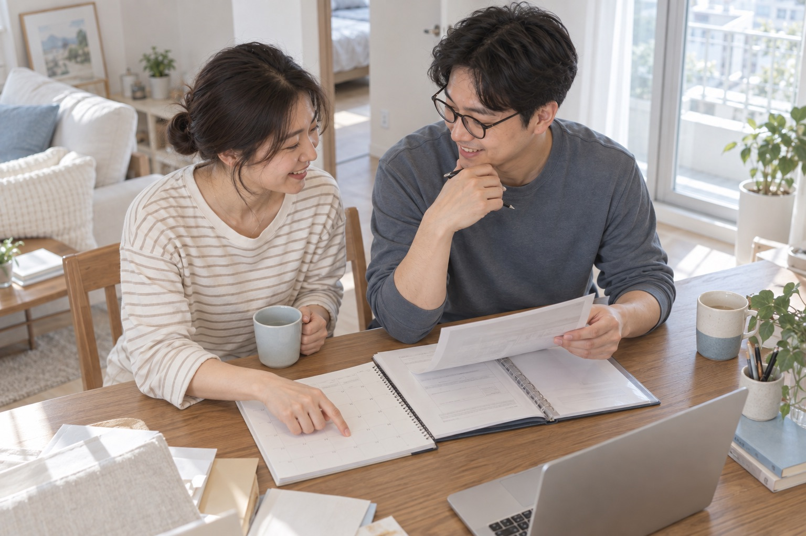
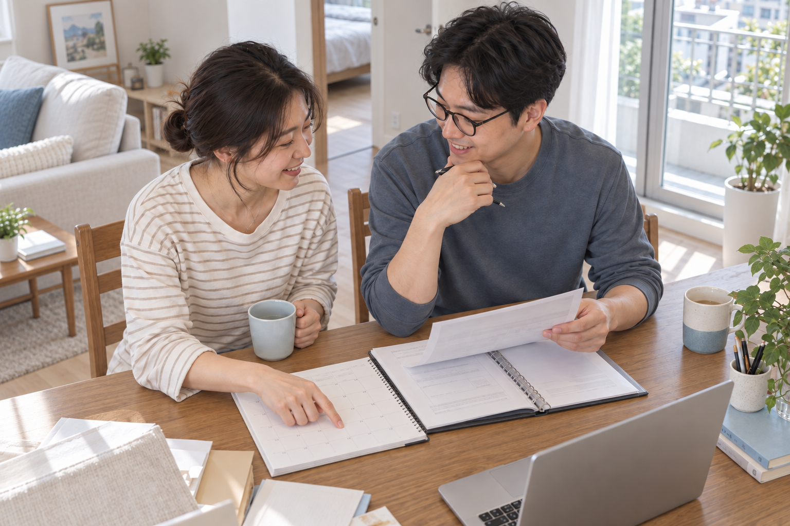
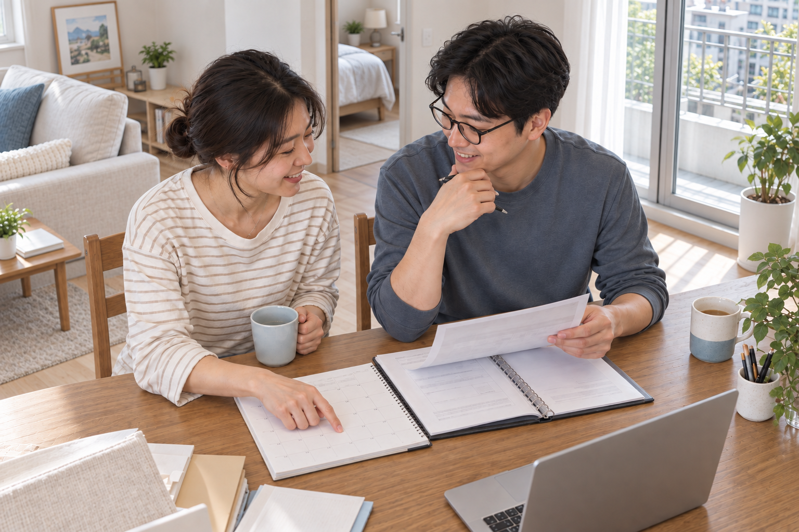
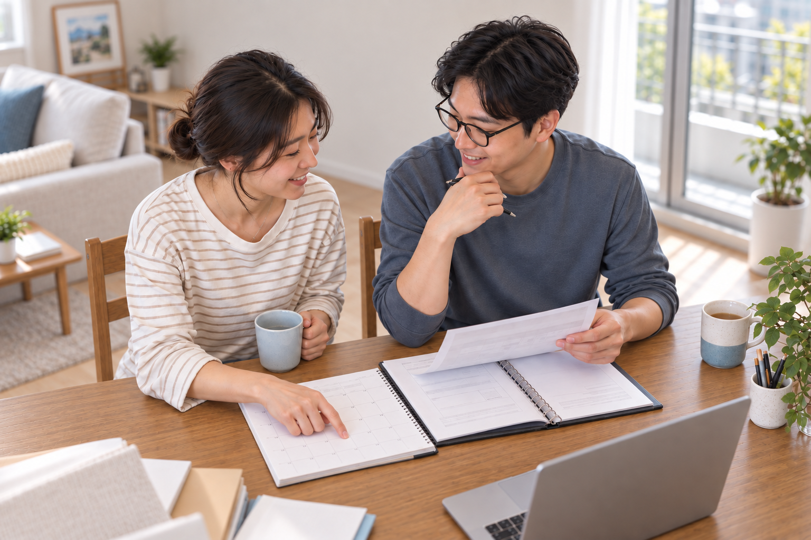

001 아이엔 / IN-S2
IMAGE CASE · IN-S2
Couple at Table
서로 다른 공간 구역과 불완전한 의자를 교정하고, 최종적으로 협업하는 두 사람에게 초점을 모은 과정.




DECISION HISTORY
최초 판단을 철회한 이유
세로선이 평행하다는 사실만으로 전체 공간을 안정적이라고 판단했지만, 구역별 바닥 높이와 깊이를 비교하자 불연속이 드러났습니다. 이후 평가는 전경 테이블, 후면 소파, 침실, 발코니를 따로 측정하도록 바뀌었습니다.
v3는 커뮤니케이션 장면으로는 개선됐지만 독립적인 기하 수치 검증 전입니다.